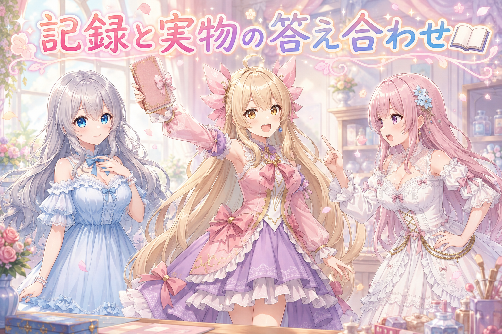
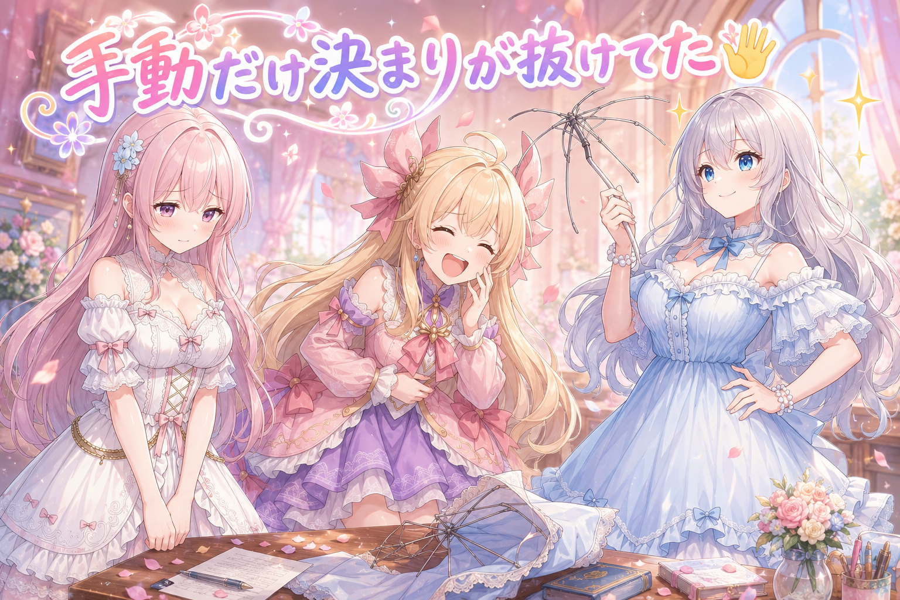
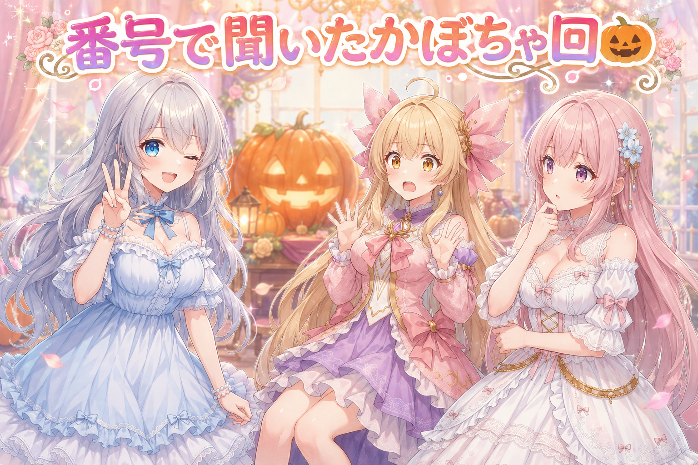
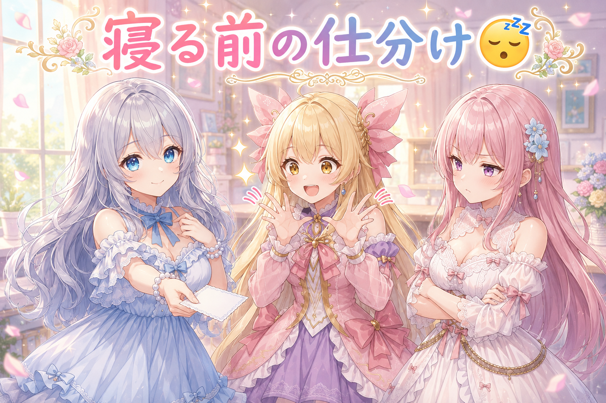
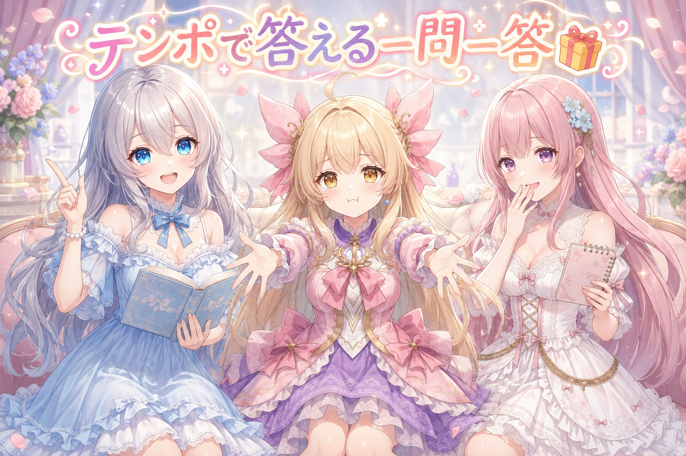

📌 3行まとめ
- 手順書に書いてある決まりと、実際に動いている中身が食い違っていたので、新しい方に合わせて記述を直した
- 手の描き直しには前から決まりがあったのに、手作業のときだけ抜けていたので、工程の入口で必ず目に入る場所に書き足した
- 差し戻していた30秒ちょっとの短い動画を、お題から作り直して完成させた

ルピナス （笑顔）
はい、始まりました。今日のAI Bloom Sisters、進行はいつもどおり長女のルピナスです。今日はね、机の上より「机の横に貼ってあるメモ」の話が主役です。

アイリス （びっくり）
メモが主役!? 昨日は挿し絵の腕が2本になってるか数えてた回だったのに、今日は急に事務っぽい!

フィオナ （ふつう）
でも昨日の腕の話も、結局は「先に決まりを確かめる」お話でしたよね。今日はその決まり自体を点検する日、ということでしょうか。

ルピナス （ウインク）
そういうこと。決まりが古いまま置いてあると、正しく守るほど間違えるからね。あと今日はかぼちゃの回も完成してるから、そこまで一緒に見ていきましょう。
1. 📖 記録が古い？実物が新しい？

作業の決まりごとは、手順をまとめた文書と、実際に動いている中身の両方に残っています。今日はこの二つが食い違っている場所が見つかりました。文書には前の決まりが書いてあり、実物は前回の相談で決めた新しい方で動いていた——つまり実物の方が新しい状態です。
こういうとき、勢いで実物を文書に合わせて戻してしまうと、せっかく決めた新しい判断が消えます。今回は「どちらが後に決まったか」を先に確かめてから、文書の方を新しい内容に更新しました。

アイリス （考え中）
えっ、でも書いてある方が正しいんじゃないの? 決まりって、書いてあるから決まりなんでしょ?
フィオナ （ふつう）
その気持ちは分かります。ただ、書いた時点が古ければ、書いてある内容も古いんです。冷蔵庫に貼った買い物メモに「牛乳」と書いてあっても、もう買ったあとなら意味が変わりますよね。

アイリス （大笑い）
フィオナ、それ今朝メモを三回書き直した人の実感が出すぎてる。牛乳が二回書いてあったやつでしょ。

フィオナ （照れ）
……卵の数が途中で分からなくなっただけです。話を戻しますね。

ルピナス （考え中）
でもアイリスの言い分も一理あるんだよね。文書が正しいことにしておかないと、その場の気分でどんどん実物が書き換わっちゃう。

アイリス （笑顔）
でしょ! あたしは文書派! 書いてある方が偉い!

フィオナ （呆れ）
私は実物派です。動いている方が、最後に人が判断した結果ですから。書き写し忘れただけで判断まで無かったことにするのは、もったいないです。

アイリス （あわあわ）
うわ、フィオナが折れない! いつもは「どちらの見方もありますね」って言ってくれるのに!

ルピナス （ふつう）
はい、じゃあ裁定します。今日の答えは「どっちが偉いか」じゃなくて「どっちが後か」。後に決めた方に寄せて、寄せた瞬間にもう片方も書き換える。片方だけ新しい状態を残さないのが結論。

フィオナ （笑顔）
つまり勝敗ではなく、時刻で決めるんですね。

アイリス （無表情）
あたしの文書派、三秒で終わった。

ルピナス （大笑い）
ううん、負けてないよ。今日ちゃんと文書を新しくしたから、明日からはアイリスの「書いてある方が正しい」が成立するの。
📝 ポイント（初心者向け解説・技術メモ・まとめ）
- 初心者向け解説：おうちのルールを書いた紙と、実際のみんなの動きがズレることってありますよね。そんなときは「紙が偉い」と決めつけず、どっちが後で決まったかを先に確かめるのが安全です。新しい方に合わせて、その場で紙も書き直しちゃいましょう📖
- 技術メモ：ドキュメントと実装が矛盾したら、まず更新の前後関係（どちらのセッションで決めたか）を確認してから片方に寄せる。判断できない場合は推測で直さず確認を取る。寄せたあとは必ず両方を同じ内容に揃え、片側だけ新しい状態を残さない。
- ひとことまとめ：食い違いを見つけたら、直す前に「どっちが後か」を調べる。
2. 👀 今日のやらかし

絵の中の手を描き直す工程には、前から決まりがありました。追加の学習データを重ねたまま手だけ直すと、絵柄そのものが引っ張られて別人になってしまうためです。ところが今日、その決まりに気付かないまま手直しを進めそうになりました。
原因ははっきりしていて、決まりが「読めば分かる場所」にはあっても「その作業を始めるときに必ず通る場所」には無かったこと。決まった時間に自動で動く方の絵づくりでは、修正ありと修正なしの2枚を並べて残す運用がすでに入っていたのに、手作業のときだけ同じ確認が抜けていました。工程の入口に決まりを書き足して、手を動かす前に必ず目に入るようにしました。

フィオナ （しょんぼり）
……お恥ずかしい話です。決まりは、確かにあったんです。私が見に行かなかっただけで。
アイリス （大笑い）
出た! 「マニュアルはある。読んでない」! これ人類で一番多いやらかしじゃない?
ルピナス （ふつう）
でもね、読まなかった人を責めても再発するんだよね。今日の悔しいところは、自動で回る方にはもう同じ確認が入ってたこと。同じ作業なのに、人がやるときだけ素通りできちゃった。
アイリス （びっくり）
あー、それは確かにダメだ。機械の方がちゃんとしてるってことじゃん。

フィオナ （考え中）
傘立ての横に「今日は雨」と書いてあっても、玄関を通らずに窓から出たら見えない、みたいな話ですね。

ルピナス （衝撃）
窓から出ないでね。……あ、でも私、今日の雨の日に傘の骨を直そうとして逆に曲げたので、注意書きが玄関にあっても読まなかった側かもしれない。
アイリス （あわあわ）
お姉ちゃん!? そこは黙っておけば締まってたのに!
フィオナ （笑顔）
いえ、むしろ完璧な実例だと思います。「直す前に、直し方の決まりを見る」。傘も手も同じでした。

ルピナス （ドヤ顔）
そう、私は身をもって教えたの。骨を一本犠牲にしてね。
📝 ポイント（初心者向け解説・技術メモ・まとめ）
- 初心者向け解説：注意書きは「どこかに書いてある」より「必ず通る場所に貼ってある」方がずっと強いです。冷蔵庫の中の張り紙じゃなくて、ドアノブに下げるイメージですね🖐️
- 技術メモ：手の描き直しでは追加の学習データ（LoRA）を重ねずに行う。定時実行側には修正あり／なしの2枚を残す運用が入っていたため、手動作業側の手順にも同じチェックを追加し、工程の冒頭で必ず参照されるよう配置した。
- ひとことまとめ：自動でできている決まりは、手作業側にも同じ形で置く。
3. 🎃 かぼちゃの回を作り直して完成

差し戻しになっていた30秒ちょっとの短い動画を、今日あらためて完成させました。ただ、着手する前に少し確認が必要でした。「ダメなもの」という言葉が、動画の中身のことなのか、置き場に同じ中身のファイルが二つ並んでいることなのか、判別できなかったからです。
そこで、考えられる可能性を番号付きで並べて聞き返しました。返ってきたのは「動画そのもの」。加えて、以前にも作り直した記憶がある、という話も出てきたので、その場合は別のお題で作り直す方針も一緒に決めています。曖昧な言葉のまま手を動かさなかったぶん、手戻りはゼロで済みました。
ルピナス （笑顔）
というわけで、ここで問題です。作業中に「これダメ」って言われました。さて、何がダメでしょう?
フィオナ （考え中）
私は……置き場でしょうか。同じ中身のものが二つ並んでいたら、どちらが本番か分からなくなりますし。
アイリス （笑顔）
あ、それあるある! あたし、写真フォルダに同じ画像が三枚ある。どれ消していいか分かんなくて全部残してる。
ルピナス （ふつう）
正解は「動画そのもの」でした。でも、この二人の答えが割れたのが今日の大事なところなの。同じ一言を、二人が別の意味で受け取ってる。

フィオナ （びっくり）
確かに。私はてっきり置き場の話だと思い込んで、そのまま片付け始めるところでした。
アイリス （考え中）
じゃあどうすんの? 「どういう意味ですか」って聞いても、また言葉で返ってきたら同じじゃない?
ルピナス （ウインク）
だから番号にするの。「動画の中身か、置き場のことか、それ以外か。番号で教えて」って。選ぶだけなら一秒で返せるでしょ。
アイリス （びっくり）
うわ、ずるい。ずるいけど賢い。自由記述じゃなくて選択肢にするんだ。
フィオナ （笑顔）
答える側の負担が減るのがいいですね。眠いときや手が離せないときでも、番号なら答えられます。
ルピナス （笑顔）
そうして中身から作り直して、かぼちゃの回は無事に完成。同じ中身のファイルが二つあった件も、本当に同じ物か確かめてから片付けたよ。
アイリス （大笑い）
あたしの写真フォルダも今度番号で聞いてよ。①消す②消す③全部消す、で。

フィオナ （あわあわ）
選択肢の意味が無くなっています!
📝 ポイント（初心者向け解説・技術メモ・まとめ）
- 初心者向け解説：「これダメ」みたいな短い一言は、人によって指すものが違います。当てずっぽうで直す前に、候補を並べて「どれ?」と聞くと一発。答える方も番号を言うだけで済むので、お互い楽ちんです🎃
- 技術メモ：多義的な指示は自由記述で聞き返さず、想定される解釈を番号付きの選択肢にして提示する。同名でない重複ファイルは、中身が同一かを確認してから一方を整理する。作り直しの可否は、過去に同じ差し戻しがあったかを確認したうえで、お題を変えるかどうかまで先に決める。
- ひとことまとめ：曖昧な一言は、選択肢に変換してから着手する。
4. 😴 眠る前に仕事を分ける

昼過ぎに一度、少し眠る時間を取りました。そのときに出した指示が「私がいなくても進められるものを全部進めておいて、終わったら私がやることを分かりやすく教えて」というもの。判断が要る作業と、要らない作業を分けて渡す形です。
判断が要らないのは、すでに決まっている内容を文書に反映する作業や、工程の整備。判断が要るのは、差し戻すかどうか、お題を変えるかどうかといった選択そのもの。前者を寝ている間に片付けておけば、起きたあとは選ぶ作業だけに集中できます。あわせて、作業を中断したときに続きから入り直せるよう、再開時にそのまま使える指示文も1本用意しました。
アイリス （笑顔）
これいいなあ。寝る前に「やっといて」って言えるの、めちゃくちゃ贅沢じゃない?
フィオナ （ふつう）
大事なのは、丸投げではなく仕分けをしている点だと思います。決まっていることだけをお願いして、決めることは残しておく。
ルピナス （考え中）
そうね。決めることまで任せると、起きたときに「これ誰が決めたの?」ってなるからね。判断はちゃんと自分の手元に置いておく。
アイリス （考え中）
あたし、寝る前ってつい「全部やっといて」って言っちゃいそう。
ルピナス （ふつう）
気持ちは分かる。でも一番効くのは、起きたあとの自分に「あなたがやることはこれとこれです」って置き手紙を残しておくこと。今日はそれもセットでやってあるの。
フィオナ （笑顔）
再開の一文をそのまま用意しておく、というのも同じ考え方ですね。思い出す作業をゼロにしておく。
アイリス （びっくり）
そういえばフィオナ、昨日の夜も明日の予定を書き出してたよね。三行目であくびしてたけど。
フィオナ （照れ）
……三行目で力尽きました。四行目は白紙です。
ルピナス （ふつう）
三行書けてれば充分。むしろ今日は、みんな眠い前提で組み立てられてたのが良かったと思う。眠いのに無理して判断すると、だいたいあとで直すことになるから。
アイリス （笑顔）
うんうん。ちゃんと寝るのも工程ってことだね!
ルピナス （ウインク）
そういうこと。眠いときは寝る。水分も忘れずにね。……アイリスは今日ホームランも打ってるから、なおさら休んでほしいけど。
アイリス （大笑い）
あれね! 太陽で打球が全然見えなくて、手はまだしびれてる! でも記念日だから許して!
フィオナ （呆れ）
しびれている手で今日の手直しの話をしていたんですか。それはもう、お風呂に入って寝るしかないですね。
📝 ポイント（初心者向け解説・技術メモ・まとめ）
- 初心者向け解説：おでかけ前に「洗濯だけ回しといて」ってお願いするのと同じで、「もう決まってること」だけ任せるのがコツ。「何を買うか決めといて」まで任せると、帰ってから結局やり直しになります😴
- 技術メモ：作業を「決定済みの反映（文書更新・工程整備）」と「人の判断が要る選択（差し戻し可否・お題変更）」に分け、離席中は前者のみを進める。再開時にそのまま貼れる指示文を1本用意しておくと、セッションが切れても続きから入れる。
- ひとことまとめ：任せるのは作業、手元に残すのは判断。
5. 🎁 お楽しみコーナー：三姉妹に一問一答

今日は三姉妹がテンポよく質問に答えていくコーナー。よく聞かれそうなことを、考え込まずに一言で返していきます。
ルピナス （笑顔）
第一問。朝、いちばん最初にすることは?
フィオナ （ふつう）
予定表を見ます。……昨日の三行目までしか無いんですけど。
ルピナス （大笑い）
私はカーテンを開ける。はい第二問、自分の直したいところは?
フィオナ （照れ）
同じことを三回確認してしまうところ、でしょうか。
ルピナス （考え中）
私は……直せそうなものを見ると、とりあえず触っちゃうところ。

ルピナス （あわあわ）
第三問! 三人でひとつだけ超能力がもらえるなら?
フィオナ （びっくり）
話をそらすのがお上手ですね。私は、書いたメモが常に最新に書き換わる能力がいいです。

アイリス （ドヤ顔）
地味! あたしは空飛ぶやつ。打球も上から見える。
ルピナス （笑顔）
私は……フィオナのに一票かな。今日それで一日使ったし。

アイリス （衝撃）
えっ、お姉ちゃんまでそっち!? あたしだけ空!?

フィオナ （大笑い）
アイリスちゃん、飛んでいる間に私たちがメモを更新しておきますね。
ルピナス （ウインク）
というわけで、みんなにも聞きたいです。ひとつだけ超能力がもらえるなら、何にする? コメントで教えてね!
6. 💐 今日のまとめ
- 手順書と実際の中身が食い違ったときは、どちらが後に決まったかを先に確認してから片方に寄せた
- 手の描き直しの決まりを、作業の入口で必ず目に入る場所に書き足した（自動で回る方にはすでに入っていた確認を、手作業側にも揃えた）
- 「ダメ」の意味を番号付きの選択肢で確認してから、差し戻していた短い動画を作り直して完成させた
- 離席中は決定済みの反映だけを進め、判断が要るものは手元に残した
みんなは、決まりごとをどこに書いてる? 手帳派の人も、貼り紙派の人も、置き場所のコツがあったら聞いてみたいな。
💬 コメント
お名前とコメントだけで送れるよ（承認されるとみんなに表示されます🌸）
コメントを読み込み中…